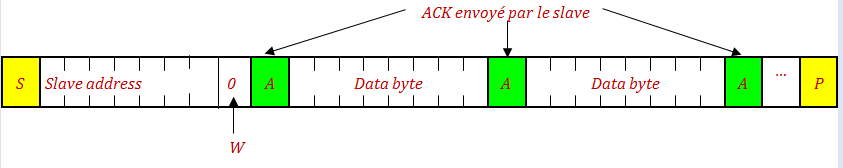

Bus I2C
Introduction
Le bus I2C (Inter-Integrated Circuit) est un bus de communication série développé par Philips Semiconductor (maintenant NXP Semiconductors) dans les années 1980. Il est largement utilisé pour la communication entre microcontrôleurs et divers périphériques tels que des capteurs, des mémoires, des horloges temps réel, et des DAC/ADC.
Voici quelques aspects clés du bus I2C :
-
Architecture Master-Slave :
- Master : Initie et contrôle la communication.
- Slave : Répond aux commandes du master.
- Un bus peut avoir plusieurs masters, mais dès que l'un prend le contrôle du bus, les autres doivent attendre jusqu'à ce que le bus se libère
-
2 lignes de Communication :
- SDA (Serial Data Line) : Ligne de données bidirectionnelle,
- SCL (Serial Clock Line) : Ligne d'horloge générée par le master.
-
Adresse :
- Chaque périphérique slave sur le bus a une adresse unique (généralement 7 bits, parfois 10 bits). Avec 7 bits d'adresse, on peut brancher jusqu'à 127 slaves sur le même bus. L'adresse 0 (General Call Address) est une adresse de diffusion, attention: certains circuits du commerce ne répondent pas à cette adresse,
-
Protocoles de Communication :
- Lecture et Écriture : Le master peut envoyer (écrire) ou demander (lire) des données à un slave.
- Start et Stop Conditions : Le master commence (start) et termine (stop) chaque transaction avec des conditions spécifiques sur les lignes SDA et SCL.
-
Vitesse de Communication :
- Standard Mode : Jusqu'à 100 kbit/s.
- Fast Mode : Jusqu'à 400 kbit/s.
- Fast Mode Plus : Jusqu'à 1 Mbit/s.
- High Speed Mode : Jusqu'à 3.4 Mbit/s.
Protocole
- Lignes de communication Bidirectionnelles
- Bus Libre
- Start Condition
- Stop Condition
- Écrire un bit sur le bus
- L' acknowledge
- SDA=0 ==> acknowledge positif (ACK), SDA=1 ==> acknowledge négatif (NoACK),
- Si c'est le master qui envoie, alors c'est le slave qui place l'acknowledge
- Si c'est le master qui reçoit, alors c'est lui même qui place l'acknowledge
- Début d'une séquence de communication
- Le master envoie un Start,
- Le master envoie l'adresse du Slave sur 7 bits
- Le master envoie le bit R/W pour indiquer s'il veut envoyer des données vers le slave ou s'il veut en recevoir
- R/W = 0 => il veut envoyer
- R/W = 1 => il veut recevoir
- Le slave place l'acknowledge pendant le 9ème coup d'horloge
- Séquence de transmission (master → slave) 
- Le master envoie le Start, suivi de l'adresse du Slave avec le bit R/W=0 pour préciser qu'il démarre une séquence de transmission
- Le slave qui a reconnu son adresse renvoie un acknowledge pendant le 9ème coup d'horloge
- Le master envoie un octet qui sera acquitté par le slave pendant le 9ème coup d'horloge
- Le master recommence l'envoi d'octets jusqu'à ce qu'il n'a plus rien à transmettre
- Le master termine la séquence en envoyant un stoP ce qui libère le bus
- Séquence de réception (master ← slave)
- Le master envoie le Start, suivi de l'adresse du Slave avec le bit R/W=1 pour préciser qu'il démarre une séquence de réception
- Le slave envoie ACK pendant le 9ème coup d'horloge suivi d'un octet pendant les 8 coups d'horloge suivants
- Le master envoie un ACK (positif) pour préciser qu'il désire recevoir un autre octet
- Le slave envoie un octet
- Le master envoie un NoACK (négatif) pour préciser qu'il ne veut plus recevoir
- Le master envoie un stoP pour mettre fin à la communication et libérer le bus
Les lignes SDA et SCK sont bidirectionnelles. De ce fait on peut avoir un conflit sur une ligne si d'un coté on écrit un '1' (Vcc) et de l'autre coté, on écrit un '0' (GND). Du point de vu logique, l'état de la ligne n'est pas défini et du point de vu électrique, c'est un court-circuit. Pour éviter ce problème, Chaque ligne fonctionne en mode collecteur ouvert (ou drain ouvert) de sorte qu'un circuit peut soit forcer la ligne à 0 et imposer un niveau '0', soit libérer la ligne, le niveau '1' est alors obtenu grâce une résistance de tirage externe.
Le niveau '0' est dominant, le niveau '1' est récessif. Une ligne passe à 0 quand un des deux circuits écrit un '0'. Si un circuit écrit un '0' et l'autre écrit un '1', celui qui a écrit le '0' gagne. Pour que la ligne passe à '1', il faut que les deux circuits écrivent un '1' en libérant la ligne et le '1' est alors imposé par la résistance de pull-up.
Le protocole I2C jongle avec cette situation pour organiser l'échange des données entre les deux composants.
Quand le bus est libre, les deux lignes SDA et SCL sont au niveau haut. C'est la condition pour qu'un master prend possession du bus et commence une séquence de communication
Quand un Master veut prendre le contrôle du bus et démarrer une séquence de communication, il génère un signal Start condition sur le bus en ramenant les deux lignes à 0
Quand un Master veut terminer une séquence de communication et libérer le bus, il génère un signal stoP condition en ramenant les deux ligne à 1
Le circuit qui écrit force la ligne SDA à 0 ou à 1 pendant l'impulsion de l'horloge sur SCL (c'est toujours le master qui génère l'horloge)
L'acknowledge est l'accusé de réception. Il est placé par le circuit (qui vient de recevoir un octet) sur la ligne SDA pendant le 9ème coup d'horloge.
Une séquence de communication doit toujours commencer comme suit:
I2C sur Arduino
Sur Arduino, on utilise la librairie Wire pour communiquer sur le bus I2C. Dès qu'on initialise la librairie à l'aide de Wire.begin(), les broches A4 et A5 deviennent SDA et SCL
Voici les fonctions usuelle de la librairie wire
- Wire.begin() Initialise l'interface I2C. La vitesse est fixée par défaut à 100kHZ.
- Wire.setClock(Fhz) Permet de modifier la fréquence de communication. Pour Arduino UNO, les valeurs acceptées sont 100000 et 400000
- Wire.beginTransmission(SlaveAdr) Envoie le Start suivi de l'adresse SlaveAdr suivi du bit R/W = 0
- Wire.write(data); Envoie un octet, une chaîne ou un tableau
- Wire.write(value); Envoie un octet
- Wire.write(string); Envoie une chaîne octet par octet
- Wire.write(tab, N); Envoie N octets du tableau tab
- S = Wire.endTransmission([b]) Déclenche la transmission des octets présents dans la mémoire tampon puis envoie un StoP, Cette fonction retourne un status S :
- 0 : Success
- 1 : data too long to fit in transmit buffer
- 2 : received NoACK on transmit of address
- 3 : received NoACK on transmit of data
- 4 : other error
- k = Wire.requestFrom(adr, N) Réalise une séquence de réception complète :
- Envoie le Start suivi de l'adresse adr avec R/W=1,
- Récupère N octets (max 32) et les place dans le buffer de réception,
- Clôture la séquence par un stoP
- La fonction retourne le nombre k d'octets effectivement lus qui peut être inférieur à N
- n = Wire.available(); Retourne le nombre d'octets en attente dans le buffer de réception
- B = Wire.read(); Lit un octet à partir du buffer de réception. L'octet est retiré du buffer.
- n = Wire.readBytes(tab,N); Permet de retirer N octets du buffer de réception et les placer dans le tableau tab. Retourne le nombre n d'octets effectivement lus qui peut être inférieur à N si le buffer de réception ne contient pas suffisamment d'octets
Les octets ne sont pas envoyés immédiatement, ils sont placés dans une mémoire tampon (file d'attente) et ne sont envoyé que quand on exécute l'instruction Wire.endTransmission()
En résumé
- Envoyer des octets B1, B2…BN vers un Slave d'adresse ADX
Wire.beginTransmission(ADX);
Wire.write(B1);
Wire.write(B2);
…
Wire.write(BN);
int s = Wire.endTransmission();
Wire.beginTransmission(ADX);
Wire.write(TAB,N);
int s = Wire.endTransmission();
Wire.requestFrom(ADX,N);
B1 = Wire.read();
B2 = Wire.read();
…
BN = Wire.read();
Wire.requestFrom(ADX,N);
Wire.readBytes(TAB,N);
Écriture, Lecture dans une mémoire EEPROM 24C64
- La 24C64 est une mémoire permanente (flash) de capacité 8 ko. Elle est organisée par page de 32 octets. La durée d'écriture d'un seul octet ou d'une page de 32 octets est de 5ms, d'où l'intérêt de faire des écriture par paquets de plusieurs octets sans dépasser 32 octets par paquet
- Les 4 bits de poids fort de l'adresse I2C sont fixés à 1010, les trois autres sont déterminés par les 3 entrées A2 A1 A0. Dans notre exemple, les trois entrées Ai sont reliées à 5V, donc adresse = 1010111 = 0x57
- L'écriture d'un ensemble d'octets se fait comme suit :
- On envoie le Start et l'adresse I2C du circuit
- On envoie l'adresse de la position interne où on commence l'écriture. Elle est constituée de deux octet adrH et adrL
- On envoie les octets de données
- On termine avec un Stop
- Si on utilise la librairie Wire, il faut faire attention car cette librairie utilise un buffer de transmission de 32 octets pour chaque séquence de transmission. Si on désire écrire une page entière de la 24C64, on a un petit problème car la séquence d'écriture est constituée de 2 octets d'adresse plus 32 octets de données ce qui fait 34 octets qui ne rentreront pas dans le buffer transmission et on perd les deux derniers octets
- Dans l'exemple ci-dessous, on réalise deux séquences d'écriture pour remplir une partage
- On rempli la première page (0x0000) avec des caractères
- On rempli la 3ème page (0x0040) avec des nombres
- On relit les pages et on affiche dans le monteur série
- La figure ci-dessous montre la mémoire avant et après écriture

#define MEM_I2C_ADR 0x57 //1010 111
#include
void setup() {
Serial.begin(9600);
Wire.begin();
// on rempli la moitié de la 1ère page
Wire.beginTransmission(MEM_I2C_ADR);
Wire.write(0x00);
Wire.write(0x00); // first page
Wire.write("abcdefghijklmnop"); // 16 caractères
Wire.endTransmission(); // On envoie 18 octets (2+16)
delay(10);
// on rempli la 2ème moitié de la page
Wire.beginTransmission(MEM_I2C_ADR);
Wire.write(0x00);
Wire.write(0x10);
Wire.write("QRSTUVWXYZABCDEF");
Wire.endTransmission(); // On envoie 18 octets (2+16)
delay(10); // flashing duration
// on rempli la 1ère moitié de la 3ème page
Wire.beginTransmission(MEM_I2C_ADR);
Wire.write(0x00);
Wire.write(0x40);
for (uint8_t i = 0; i < 16; i++)Wire.write(i);
Wire.endTransmission();
delay(10);
// on rempli la 2ème moitié de la 3ème page
Wire.beginTransmission(MEM_I2C_ADR);
Wire.write(0x00);
Wire.write(0x50);
for (uint8_t i = 16; i < 32 ; i++)Wire.write(i);
Wire.endTransmission();
delay(10);
// On positionne l'adresse courante
Wire.beginTransmission(MEM_I2C_ADR);
Wire.write(0x00);
Wire.write(0x00);
Wire.endTransmission();
// On reçoit 32 caractères vers le buffer de réception
Wire.requestFrom(MEM_I2C_ADR, 32);
// on récupère les caractères dans le buffer de réception
for (int i = 0; i < 32; i++) {
char c = Wire.read();
Serial.print(c);
}
Serial.println();
// On positionne l'adresse courante sur 3ème page
Wire.beginTransmission(MEM_I2C_ADR);
Wire.write(0x00);
Wire.write(0x40);
Wire.endTransmission();
// on reçoit 32 octets dans le buffer de réception
Wire.requestFrom(MEM_I2C_ADR, 32);
// on récupère les octets dans le buffer de réception
for (int i = 0; i < 32; i++) {
if(i % 8 == 0)Serial.println();
uint8_t k = Wire.read();
Serial.print(k);
Serial.print(" ");
}
Serial.println();
}
void loop() {
}